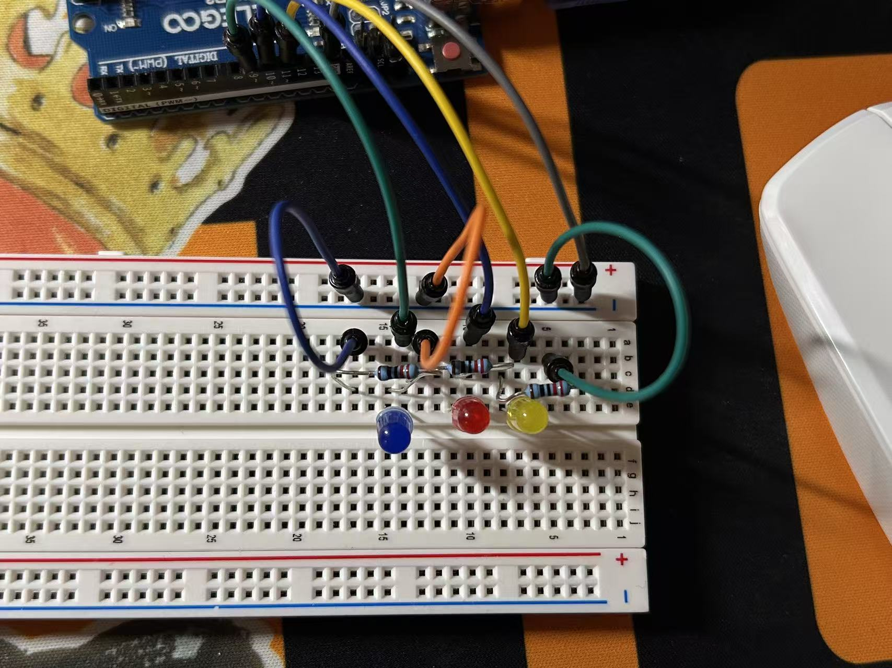
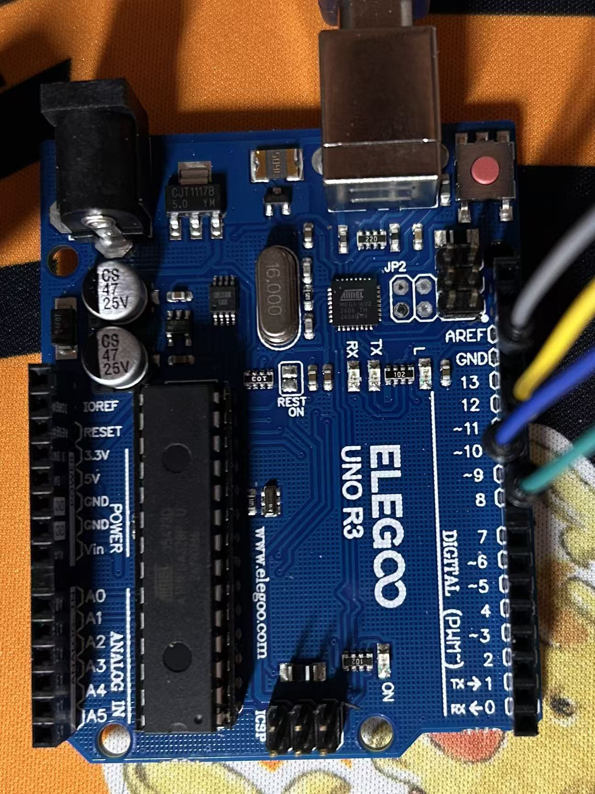
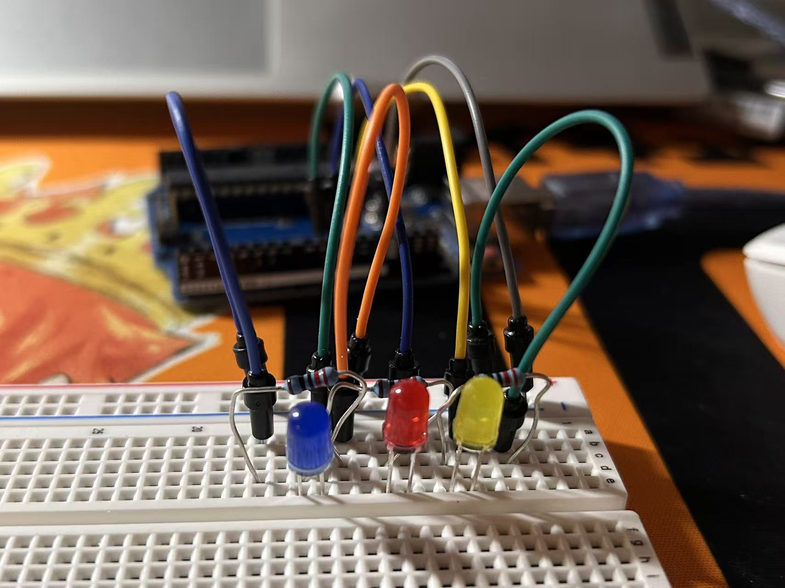
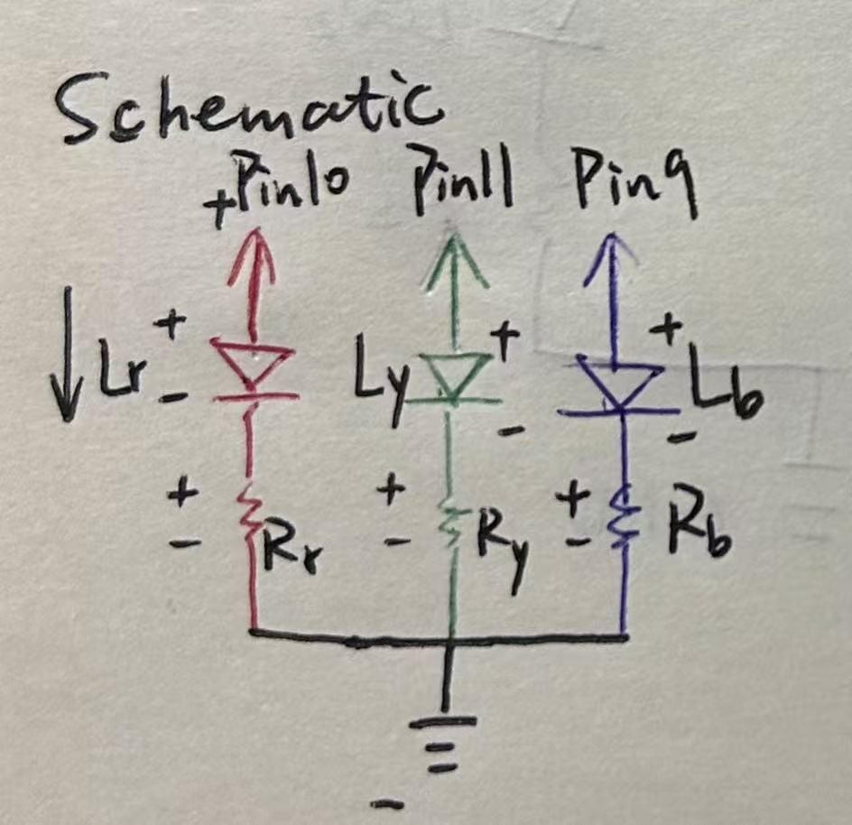
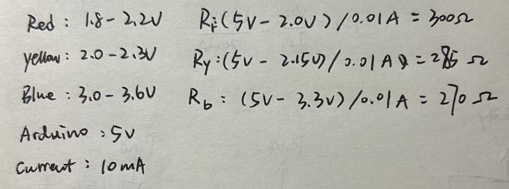
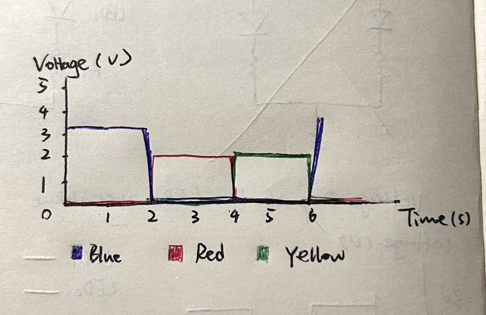
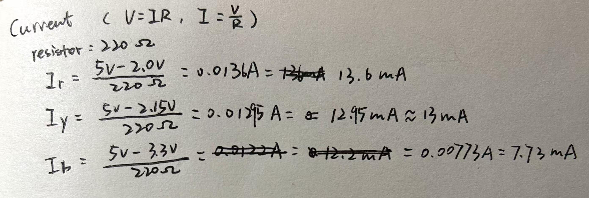

2. Circuit & Operation




In this assignment, I built a circuit with 3 LEDs(Blue, Red, Yellow), and each LED can be controlled separately.



I used Ohm's Law to calculate the resistance for each LED, based on a default 5V and a current of 10mA.

For all three LEDs, I chose a 220Ω resistor. I calculated the different resistances for each LED, due to the material limitations, I chose the closest 220Ω resistor. This could prevent the current from being too low, causing the LED not to light up, or the current from being too high, resulting in the circuit being burned out.
I programmed the Arduino IDE to turn on the blue, red, and yellow LEDs in sequence. Each LED stays on for two seconds and repeats continuously.
//run once
void setup() {
//set Pin9 as the output of the Blue LED
pinMode(9, OUTPUT);
//set Pin10 as the output of the Red LED
pinMode(10, OUTPUT);
//set Pin11 as the output of the Yellow LED
pinMode(11, OUTPUT);
}
//run repeatedly
void loop() {
//this part, only turn on the Blue LED
//the circuit of Blue LED has 5v(HIGH voltage), which makes the Blue LED turns on
digitalWrite(9, HIGH);
//the circuit of Red LED has 0v(LOW voltage), turn off the Red LED
digitalWrite(10, LOW);
//the circuit of Yellow LED has 0v(LOW voltage), turn off the Yellow LED
digitalWrite(11, LOW);
//keep the Blue LED on for 2 seconds
delay(2000);
//this part, only turn on the Red LED
//the circuit of Blue LED has 0v(LOW voltage), turn off the Blue LED
digitalWrite(9, LOW);
//the circuit of Red LED has 5v(HIGH voltage), which makes the Red LED turns on
digitalWrite(10, HIGH);
//the circuit of Yellow LED has 0v(LOW voltage), turn off the Yellow LED
digitalWrite(11, LOW);
//keep the Red LED on for 2 seconds
delay(2000);
//this part, only turn on the Yellow LED
//the circuit of Blue LED has 0v(LOW voltage), turn off the Blue LED
digitalWrite(9, LOW);
//the circuit of Red LED has 0v(LOW voltage), turn off the Red LED
digitalWrite(10, LOW);
//the circuit of Yellow LED has 5v(HIGH voltage), which makes the Yellow LED turns on
digitalWrite(11, HIGH);
//keep the Yellow LED on for 2 seconds
delay(2000);
}
The graph shows the voltage across each LED over time.

The Arduino Uno R3 has 14 digital pins and 6 analog pins, so ideally it can independently control up to 20 LEDs. If all 20 LEDs are turned on simultaneously, the estimated total current is approximately 260mA, which exceeds the absolute maximum current rating of 200mA for the Arduino controller. However, if only one LED is turned on at a time, the current is approximately 13mA. (The thinking process is guided by AI.)

I used the blue LED to test how fast it needed to blink before I could no longer notice the flashing. I gradually decreased the delay time and found that I could barely see the LED blinking at delay(11), but at delay(10), the LED appear to stay on continuously.
void setup() {
pinMode(9, OUTPUT);
}
void loop() {
digitalWrite(9, HIGH);
delay(10);
digitalWrite(9, LOW);
delay(10);
}
I used AI to help me with Question 2 and grammar checking. Instead of asking for the answer directly, I asked AI to guide me step by step through the thinking process. This helped me better understand the structure of Arduino and how to calculate the total current and some reminders about current.